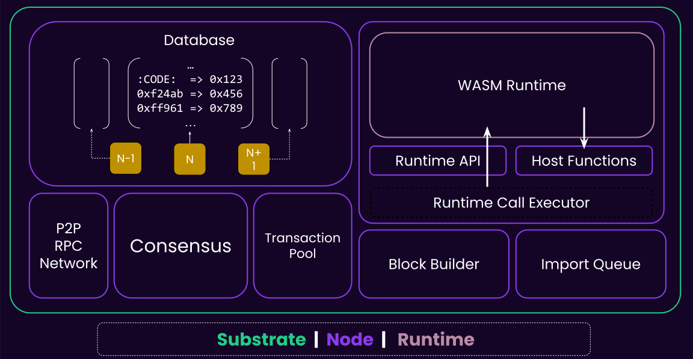

<!DOCTYPE html>
<html lang="en">

<head>
  <meta charset="utf-8" />
  <meta name="viewport" content="width=device-width, initial-scale=1.0, maximum-scale=1.0, user-scalable=no" />

  <title>Introduction to Substrate</title>
  <link rel="icon" href="./../../../assets/favicon.svg" />
  <link rel="shortcut icon" href="./../../../assets/favicon.png" />
  <link rel="stylesheet" href="./../../../dist/reset.css" />
  <link rel="stylesheet" href="./../../../dist/reveal.css" />
  <link rel="stylesheet" href="./../../.././assets/styles/PBA-theme.css" id="theme" />
  <link rel="stylesheet" href="./../../../css/highlight/shades-of-purple.css" />

  <link rel="stylesheet" href="./../../.././assets/styles/custom-classes.css" />

</head>

<body class="site">
  <header class="site-header">
    <!-- This logo is a link only on the watching server, not the production build -->
    <a href="">
      
    </a>
  </header>
  <main class="reveal">
    <article class="slides">
      <section  data-markdown><script type="text/template">

# Introduction to Substrate
</script></section><section  data-markdown><script type="text/template">
## Blockchains are Fascinating!

<pba-flex center>

<h4 style="color: var(--substrate-host); top: 0">  They Enable </h4>
<!-- .element: class="fragment" -->

- 🤝 Trust without middlemen<!-- .element: class="fragment" -->
- 📜 History that cannot be forged <!-- .element: class="fragment" -->
- 💰 Digital Gold (Bitcoin) <!-- .element: class="fragment" -->
- 🌐 World Computer (Ethereum) <!-- .element: class="fragment" -->
- 🔮 Programmable Money (DeFi) <!-- .element: class="fragment" -->

### But...

<!-- .element: class="fragment" -->

</pba-flex>
</script></section><section  data-markdown><script type="text/template">
## Building One is HARD 😰

You Need Expertise in (roughly) 8 Disciplines

<!-- .element: class="fragment" -->

<br>
<pba-cols>
<pba-col>

- 🌐 Networking <!-- .element: class="fragment" -->
- 🔐 Cryptography <!-- .element: class="fragment" -->
- 🤝 Consensus <!-- .element: class="fragment" -->
- 💾 Database <!-- .element: class="fragment" -->

</pba-col>
<pba-col>

- ⚙️ Execution <!-- .element: class="fragment" -->
- 💰 Economics <!-- .element: class="fragment" -->
- 🗳️ Governance <!-- .element: class="fragment" -->
- 🛠️ Application <!-- .element: class="fragment" -->

</pba-col>
</pba-cols>

**Each discipline = Years to master**

<!-- .element: class="fragment" -->
</script></section><section ><section data-markdown><script type="text/template">
## So How Do You Build a Blockchain?

Option 1: Fork & Modify 🍴<!-- .element: class="fragment" -->

- 📚 Inherit all technical debt <!-- .element: class="fragment" -->
- 🔒 Stuck with original design <!-- .element: class="fragment" -->
- 🐛 Merge conflicts forever <!-- .element: class="fragment" -->
- 😱 One wrong line = disaster <!-- .element: class="fragment" -->
</script></section><section data-markdown><script type="text/template">
## So How Do You Build a Blockchain?

Option 2: Build from Scratch 🏗️

- ⏰ Years of development <!-- .element: class="fragment" -->
- 💸 Millions in funding <!-- .element: class="fragment" -->
- 🐛 Reinvent every bug <!-- .element: class="fragment" -->
- 🎯 90% chance of failure <!-- .element: class="fragment" -->
</script></section></section><section ><section data-markdown><script type="text/template">
## A History of Blockchain Disasters

<pba-flex center>

<h4 style="color: var(--substrate-host); top: 0"> Bitcoin Overflow (2010) </h4>

- 184 billion BTC created
- Integer overflow bug
- Emergency fix required

</pba-flex>
<!-- .element: class="fragment" -->

<aside class="notes"><p><a href="https://en.bitcoin.it/wiki/Value_overflow_incident">https://en.bitcoin.it/wiki/Value_overflow_incident</a></p>
</aside></script></section><section data-markdown><script type="text/template">
## A History of Blockchain Disasters

<pba-flex center>

<h4 style="color: var(--substrate-host); top: 0"> The DAO Hack (2016) </h4>

- $60M stolen
- Ethereum hard fork
- Community split forever

</pba-flex>

<aside class="notes"><p><a href="https://www.gemini.com/cryptopedia/the-dao-hack-makerdao">https://www.gemini.com/cryptopedia/the-dao-hack-makerdao</a></p>
</aside></script></section><section data-markdown><script type="text/template">
## A History of Blockchain Disasters

<pba-flex center>

<h4 style="color: var(--substrate-host); top: 0"> Parity Wallet (2017) </h4>

- $30M stolen
- $115M frozen permanently
- Simple library bug

</pba-flex>

<aside class="notes"><p><a href="https://tc.gts3.org/cs8803/2023-spring/student_presentations/team7.pdf">https://tc.gts3.org/cs8803/2023-spring/student_presentations/team7.pdf</a></p>
</aside></script></section><section data-markdown><script type="text/template">
## A History of Blockchain Disasters

<pba-flex center>

<h4 style="color: var(--substrate-host); top: 0"> Solana Halts (2020+) </h4>

- Multiple downtimes
- Consensus failures

</pba-flex>

<aside class="notes"><p><a href="https://www.helius.dev/blog/solana-outages-complete-history">https://www.helius.dev/blog/solana-outages-complete-history</a></p>
</aside></script></section><section data-markdown><script type="text/template">
**Building blockchains is genuinely hard** 🎯
</script></section></section><section  data-markdown><script type="text/template">
## Option 3: Something In Between? 🤔

<pba-flex center>

What if we could...

- ✅ Reuse battle-tested components <!-- .element: class="fragment" -->
- ✅ Pick & Choose components <!-- .element: class="fragment" -->
- ✅ Focus on your innovation <!-- .element: class="fragment" -->

</pba-flex>
</script></section><section  data-markdown><script type="text/template">
## The Core Thesis of Polkadot

<pba-flex center>

> The Future is Multi-Chain 🌈

Not one chain to rule them all… <!-- .element: class="fragment" -->

But many specialized chains… <!-- .element: class="fragment" -->

All working together, yet… <!-- .element: class="fragment" -->

Under the same trust umbrella → Shared Security <!-- .element: class="fragment" -->  
</pba-flex>
</script></section><section  data-markdown><script type="text/template">
## So We Built Substrate

<pba-flex center>

### A Blockchain Framework That:

- ✅ Handles the hard parts
- ✅ Lets you customize everything
- ✅ Battle-tested in production
- ✅ Fast & Interoperable

</pba-flex>

<aside class="notes"><p>Future proof (forkless upgrade and modular) discussed later.</p>
</aside></script></section><section ><section data-markdown><script type="text/template">
## Powered By Substrate

<pba-flex center>

### Polkadot Ecosystem

- Polkadot relay chain
- Moonbeam (EVM based)
- HydraDX
- 100+ parachains

</pba-flex>
</script></section><section data-markdown><script type="text/template">
## Powered By Substrate

<pba-flex center>

### Standalone Chains

- BitTensor
- Midnight
- Avail
- Starknet Madara
- Aleph Zero
- Tanssi

</pba-flex>
</script></section><section data-markdown><script type="text/template">
## Powered By Substrate

What will you build? 🚀
</script></section></section><section  data-markdown><script type="text/template">
## Why Rust? 🦀

<pba-cols>
<pba-col>

### Strong

- Memory safe
- Thread safe
- No null pointers
- No data races

</pba-col>
<pba-col>

### Popular

- Most loved language (8 years)
- Growing ecosystem
- Great tooling
- Active community

</pba-col>
<pba-col>

### Secure

- 70% fewer bugs
- Compile-time guarantees
- Perfect for blockchain

</pba-col>
</pba-cols>
</script></section><section  data-markdown><script type="text/template">
## But Can We Do Better? 🤔

<aside class="notes"><ul>
<li>Forkless Upgrades</li>
<li>Governance Baked In</li>
<li>Modular</li>
</ul>
</aside></script></section><section ><section data-markdown><script type="text/template">
## Upgrading the Chain ✨

<h4 style="color: var(--substrate-host); top: 0"> Traditional Chains </h4>

<pba-flex center>

1. Convince all nodes
2. Schedule hard fork
3. Pray everyone updates
4. Deal with chain splits

</pba-flex>
<!-- .element: class="fragment" -->

<br>

😰 Coordination nightmare <!-- .element: class="fragment" -->
</script></section><section data-markdown><script type="text/template">
## Upgrading the Chain ✨

<h4 style="color: var(--substrate-host); top: 0"> Substrate Chains </h4>

<pba-flex center>

- Propose a new runtime as a Wasm blob (via governance or sudo).
- If approved, all nodes auto-upgrade to the new runtime.

</pba-flex>
<!-- .element: class="fragment" -->
<br>

🎉 Forkless upgrades <!-- .element: class="fragment" -->
</script></section></section><section ><section data-markdown><script type="text/template">
## Substrate Architecture


</script></section><section data-markdown><script type="text/template">
#### Substrate (simplified) Architecture

<pba-cols>

<pba-col center>
<h3 style="color: var(--substrate-runtime); top: 0"> Runtime (Protocol) </h3>

- Application logic aka. How we execute block
- Stored as a part of your chain state as a WASM Blob
- Upgradeable
- Also known as: STF

</pba-col>

<pba-col center>


</pba-col>
</pba-cols>
</script></section><section data-markdown><script type="text/template">
#### Substrate (simplified) Architecture

<pba-cols>
<pba-col center>
<h3 style="color: var(--substrate-host); top: 0"> Fixed Node (Meta-protocol) </h3>

- Native Binary
- Executes the Wasm runtime
- Everything else: Database, Networking, Mempool, Consensus..
- Also known as: Host, Client

</pba-col>

<pba-col center>


</pba-col>

</pba-cols>
</script></section></section><section  data-markdown><script type="text/template">
## Analogy: The Gaming Console!

<br>
<pba-cols>
<pba-col>


Substrate Node

</pba-col>
<pba-col>


Substrate's Wasm Runtime

</pba-col>
</pba-cols>

<aside class="notes"><p>Another good analogy: Node is the FPGA, and FRAME/Wasm is the VHDL.</p>
</aside></script></section><section ><section data-markdown><script type="text/template">
### 😎 Forkless Upgrade


</script></section><section data-markdown><script type="text/template">
### 😎 Forkless Upgrade


</script></section></section><section ><section data-markdown><script type="text/template">
## When Do Nodes Need Upgrading?

<pba-flex center>

### Host API Changes

- New crypto primitives
- Performance improvements
- Bug fixes in node software
</script></section><section data-markdown><script type="text/template">
## Everything else?

<pba-flex center>

- Forkless Runtime Upgrades 🎉
- 65+ times since Polkadot went live (May 2020)

<aside class="notes"><p><a href="https://polkadot.subscan.io/event?page=1&amp;time_dimension=date&amp;module=system&amp;event_id=codeupdated&amp;page_size=25">https://polkadot.subscan.io/event?page=1&amp;time_dimension=date&amp;module=system&amp;event_id=codeupdated&amp;page_size=25</a></p>
</aside></script></section></section><section  data-markdown><script type="text/template">
## Governance Baked In 🗳️

<pba-flex center>

- On-chain voting
- Treasury management
- Parameter changes
- Upgrade decisions

<br><br>

</pba-flex>

**The chain governs itself** <!-- .element: class="fragment" -->
</script></section><section  data-markdown><script type="text/template">
## Maximum Modularity 🧩

<pba-flex center>

- **Database?** ParityDB, RocksDB
- **Networking?** QUIC, TCP
- **Consensus?** Choose AURA, BABE, or custom
- **Finality?** GRANDPA, or something else
- **Accounts?** 32-byte, 20-byte, or custom
- **Crypto?** Ed25519, Sr25519, ECDSA, or all

<br><br>

</pba-flex>

**Like LEGO for blockchains** <!-- .element: class="fragment" -->
</script></section><section  data-markdown><script type="text/template">
## Full Substrate Architecture



<aside class="notes"><ul>
<li>Consensus not part of STF</li>
<li>State is untyped key-value storage. Runtime can interpret it.</li>
</ul>
</aside></script></section><section  data-markdown><script type="text/template">
## Recap

- Substrate is a modular framework to build fast, secure, future-proof blockchain.
- Substrate Node architecture.
- Forkless Upgrades
</script></section><section  data-markdown><script type="text/template">
## Additional Resources! 😋

> Check speaker notes (click "s" 😉)


</script></section>
    </article>
  </main>

  <script src="./../../../dist/reveal.js"></script>

  <script src="./../../../plugin/markdown/markdown.js"></script>
  <script src="./../../../plugin/highlight/highlight.js"></script>
  <script src="./../../../plugin/zoom/zoom.js"></script>
  <script src="./../../../plugin/notes/notes.js"></script>
  <script src="./../../../plugin/math/math.js"></script>

  <script src="./../../../assets/plugin/mermaid.js"></script>
  <script src="./../../../assets/plugin/mermaid-theme.js"></script>

  <script src="./../../../assets/plugin/chart/chart.js"></script>
  <script src="./../../../assets/plugin/chart/chart.min.js"></script>

  <script src="./../../../assets/plugin/tailwindcss.min.js"></script>

  <script>
    function extend() {
      var target = {};
      for (var i = 0; i < arguments.length; i++) {
        var source = arguments[i];
        for (var key in source) {
          if (source.hasOwnProperty(key)) {
            target[key] = source[key];
          }
        }
      }
      return target;
    }

    // default options to init reveal.js
    var defaultOptions = {
      controls: true,
      progress: true,
      history: true,
      center: true,
      transition: 'default', // none/fade/slide/convex/concave/zoom
      slideNumber: true,
      mermaid: {
        startOnLoad: false,
        logLevel: 3,
        theme: 'base',
        themeVariables: {
          primaryColor: purple,
          primaryTextColor: white,
          primaryBorderColor: pink,
          lineColor: pink,
          secondaryColor: lightPurple,
          tertiaryColor: lightPurple,
        },
      },
      chart: {
        defaults: {
          color: 'lightgray', // color of labels
          scale: {
            beginAtZero: true,
            ticks: { stepSize: 1 },
            grid: { color: "lightgray" }, // color of grid lines
          },
        },
        line: { borderColor: ["#ccc", "#E6007A", "#6D3AEE"], "borderDash": [[5, 10], [0, 0]] },
        bar: { backgroundColor: ["#ccc", "#E6007A", "#6D3AEE"] },
      },
      plugins: [
        RevealMarkdown,
        RevealHighlight,
        RevealZoom,
        RevealNotes,
        RevealMath,
        RevealMermaid,
        RevealChart
      ]
    };

    // options from URL query string
    var queryOptions = Reveal().getQueryHash() || {};

    var options = extend(defaultOptions, {"width":1400,"height":900,"margin":0,"minScale":0.2,"maxScale":2,"transition":"none","controls":true,"progress":true,"center":true,"slideNumber":true,"backgroundTransition":"fade"}, queryOptions);
  </script>


  <script>
    Reveal.initialize(options);
  </script>
</body>

</html>
